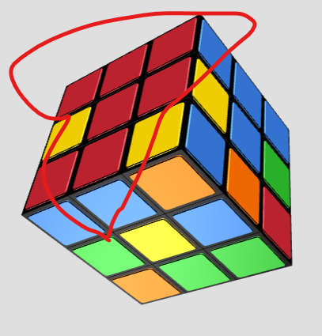
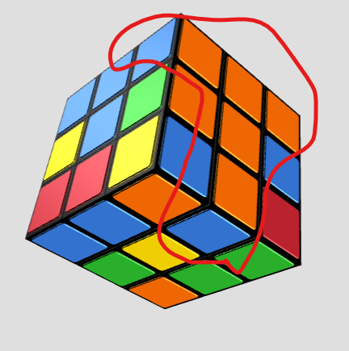
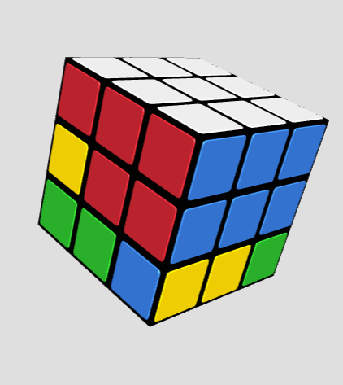
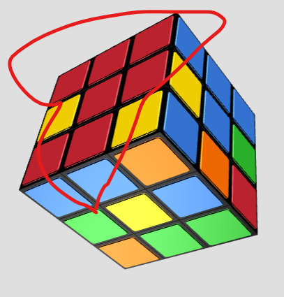
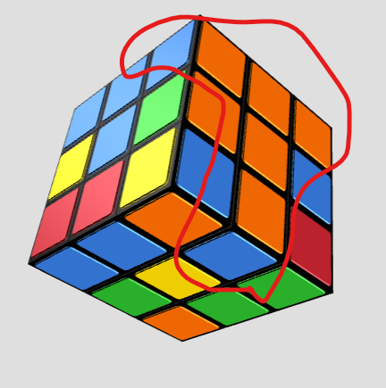
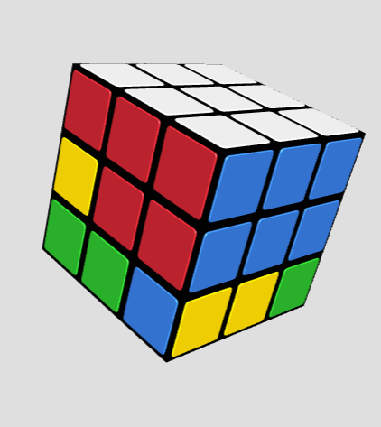

How to Solve a Rubik's Cube
Do you want to solve a Rubik's cube? No? Now, that we got that out of the way. Welcome to this tutorial on how to solve everyone's favorite pile of colored cubes, the Rubik's Cube. But first, we need to go over some notation. I'll be listing moves to perform on the Rubik's Cube using a notation. This makes it faster to type all this out, as well as shortening the algorithms we wil go over later.
There are 12 moves that we need to notate for. Those are U, F, R, B, L, and D, and all of their primes. A normal move, indicated by one of those 6 letters, involves turning that face clockwise. U for up face, F for front face, R for right face, B for back face, L for left face, and D for down face.
The other 6 moves are the prime moves, indicated by one of the 6 letters followed by a '. These moves involve turning the face counter-clockwise. The 12 moves are on the right of the screen.
The other thing to notate is the pieces of the Rubik's Cube. There are 3 types of pieces on the Rubik's Cube. The corners, edges, and centers. Each piece is highlighted and labeled on the right of the screen.
Now let's go over the steps to solving a Rubik's Cube. There are 6 steps to solving one. They are:
- White Cross
- White Corners
- Middle Edges
- Yellow Cross
- Yellow Corners
- Last Layer
Step 1: To solve the white cross, we need to first find the white center and white edges. The white center is the center piece that is painted white. It is on the U face of the picture on the right. A white edge is any edge that has one of the two colors as white. It is circled on the right. To solve this step, we need to take these 4 edges and position them so they line up with the centers. An example with two of these edges solved is on the right. There isn't any algorithms for this step. You can solve this by just turning the cube without any direction besides getting the white edges in place. Once you have all 4 solved, you can move to the second step.
Step 2: To solve the white corners, we need to locate the 4 white corners. A white corner, just like the edges, is any corner with a white piece on it. To solve this step, we need to find the corner and place it so it lines up with the edges. An example of a corner being placed wrong and right. To place these corners, move an edge down and then move the corner so the white pieces line up. An example of this is on the right. Once finished, it should look like the top right image in the Step 2 section. Repeat this process for the remaining 3 corners. Once all 4 corners are done, you can move to step 3.
Step 3: To solve the middle edges, we need to locate the middle edge pieces. The middle edge pieces are the ones without any yellow pieces on them. Most of the time you will find one on the yellow face (which is usually the D face when holding the cube). Once you find one, position it so it forms a T shape with the center piece and the solved portion of the same color. The first picture in the Step 3 section is how the cube should look after Step 2. The second picture is an example of a middle edge in the correct location. We need to use an algorithm now to put the middle edge into place while keeping our previous work intact. There are 2 possibilities, depending on which side the middle edge needs to go to. In the second picture example, the middle edge needs to go to the right side. In the third picture example, the middle edge needs to go to the left side.
The algorithm for the right side case is: D' R' D' R D F D F'. The algorithm for the left side case is:
D L D L' D' F' D' F. After either case, the cube should look similar to the 4th picture in the Step 3 section. Repeat this process for the remaining 3 middle edges using either algorithm as you need. Once all 4 middle edges are done, you are ready to move to step 4.
Step 4: To start solving the Yellow Cross, your cube needs to look like the first picture in the Step 4 section. Once this is done, flip the cube over so the yellow side is now the U side. Step 4 is solving the yellow cross. To do this, we will use an algorithm. F U R U' R' F'. However, before we can use this algorithm, we need to talk about cases. Cases is used to describe different possibilities that the cube could have upon reaching this step. For Step 4, we have 4 cases. Dot, Bar shape, L shape, and Solved. All 4 cases will be in the picture section. If you have the solved case, you can skip this step. If not, the 4 cases are in a sequence. The sequence is the same as the order I listed before: Dot, Bar, L, then Solved. If you do the algorithm from the Dot case, you will get the bar case. If you do it from the bar case, you will get the L case and so on. The only thing to note is positioning. If you are on the Bar and L position it so it is the same orientation as the pictures. If not, you won't follow the sequence. Once you have the solved case, you can go to Step 5.
Step 5: To start solving the Yellow Corners, your cube needs to look like the last picture in the Step 4 section. For this step, we have a very simple algorithm. There is only one caveat which we will go over in a few sentences. The algorithm is R' D' R D. To start, position the cube so that an unsolved corner is in the FR part of the cube. An example of this, is the first picture in the Step 5 section. As you can see, a solved corner has the yellow on the correct side. The unsolved example is in the correct position for the algorithm. If an unsolved corner is in that location, repeat the algorithm until the corner is solved. Once the corner is solved, move a new corner into place by ONLY turning the U face. This is the caveat I mentioned earler. If you turn the entire cube, it will break and you will have to restart. Only turn the U face to correctly fix the edges. Once all 4 yellow corners are in place, quickly check the rest of the cube to make sure it still looks good. If you did this step correctly, it will not have broken. If you did not do this step correctly, you will have to restart this guide.
Step 6: To start solving the Last Layer, and finish the cube, your cube needs to look like the last picture in the Step 5 section. The first substep of Step 6 is solving the corners. Solving the corners means moving them to their correct locations. For this step's algorithm, it is: R' F R' B B R F' R' B B R R. To start, look for two corners that share a color. An example is the orange corners in the last picture of Step 5. These are called headlights. If you don't have a set of headlights, then you can just do the algorithm once, which will make a pair of headlights. Once you have a pair of headlights, position them so they are on the B face and perform the algorithm. If you did this algorithm correctly, all 4 corners should be matched up, so you have 4 pairs of headlights. Now turn the U face so the corners line up with their respective sides. Once finished, it should look like the first picture in the Step 6 section.
Now that we have finished the Yellow Corners, we can move the the second substep which is also the final step of solving a Rubik's Cube. Solving the Yellow Edges. To start, let's go over the 3 cases. No Solved, One Solved, and All Solved. No Solved means that none of the edges line up with their respective colors. One Solved means one edge is lined up with their respective colors. All Solved means all 4 edges are lined up with their respective colors, which also means you are done. Congrats! If you have one of the other two cases, we have one final algorithm to learn: F F U R' L F F R L' U F F. To position the cube, if you have No Solved, then just perform the algorithm until you get One Solved. Once you have One Solved, position it so the one edge is on the B face. Then repeat the algorithm until you get All Solved. Congrats! You now have a fully solved Rubik's Cube.


 




